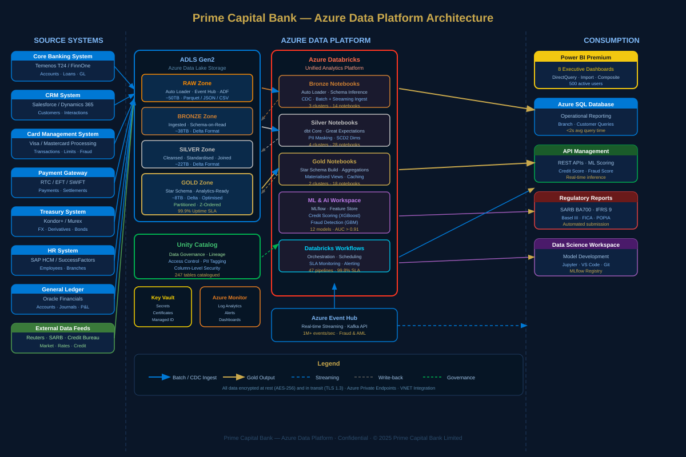
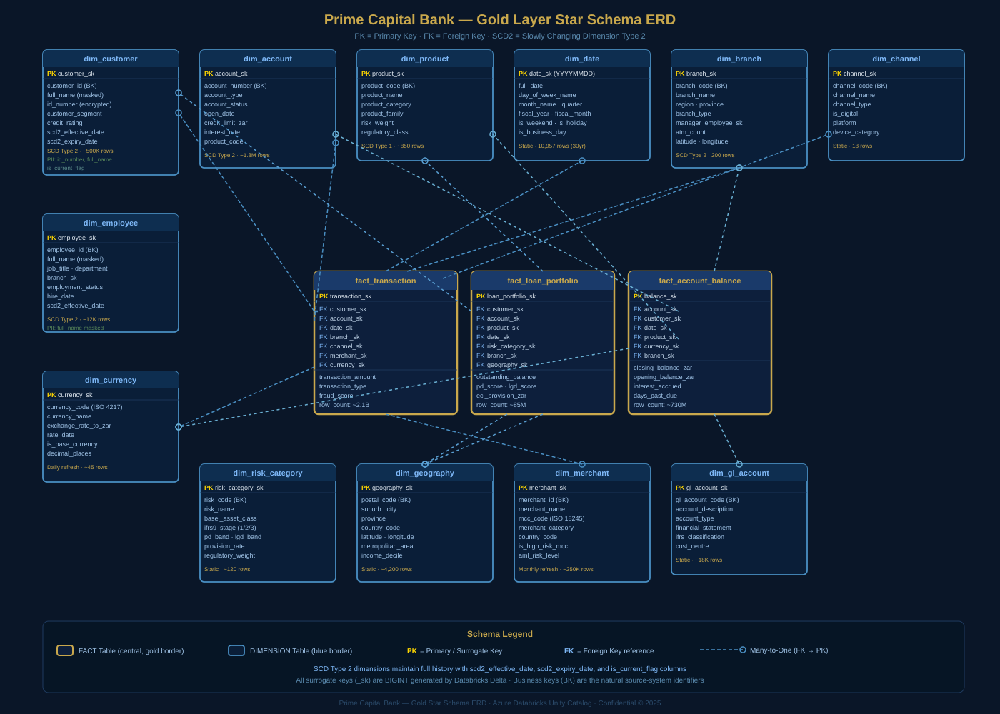

Data Intelligence
Platform
Azure Databricks · Medallion Architecture · ML & Analytics
Executive Summary
The strategic vision, key outcomes, and platform metrics for Prime Capital Bank's unified data intelligence initiative.
Prime Capital Bank has embarked on a transformational journey to consolidate its fragmented data landscape into a single, governed, cloud-native data intelligence platform. Operating across 200 branches with 500,000 active retail, commercial, and corporate customers, and managing a portfolio exceeding R2.3 trillion in assets under management, the bank required a platform capable of meeting the dual demands of real-time operational intelligence and rigorous regulatory compliance.
The legacy environment comprised more than a dozen isolated system-of-record databases — Temenos T24 core banking, Salesforce CRM, a proprietary card management system, Kondor+ treasury, Oracle Financials general ledger, and multiple third-party data feeds from Reuters, the South African Reserve Bank (SARB), and TransUnion credit bureau. Data resided in siloed on-premises servers, batch-transferred nightly through brittle ETL pipelines, with analytical workloads competing for OLTP resources and risk models running days behind the market.
To build a single source of analytical truth for Prime Capital Bank — a cloud-native, governed, ML-enabled data platform that eliminates data silos, accelerates regulatory reporting, and delivers actionable intelligence to every business unit within the SLA window.
Key Business Outcomes
The Data Intelligence Platform has delivered measurable outcomes across four strategic dimensions: operational efficiency, risk management, regulatory compliance, and customer intelligence.
The two charts below break down the platform’s most critical headline numbers: how the R312.6 billion loan book is distributed across product categories, and how the bank’s capital ratios compare to SARB minimum requirements.
The loan book totals R312.6 billion across four product categories. Home loans dominate at 40% of the book, reflecting the bank's strategic focus on secured retail lending. Capital adequacy ratios comfortably exceed SARB minimum requirements, providing a substantial buffer for stressed scenarios and growth capital.
Left: Loan book distribution by product (R billions). Right: Capital ratios vs SARB minimums (%). Source: Gold layer — fact_loan_portfolio, regulatory_reporting.
Platform Components
The platform is built on Azure Databricks with a Medallion (Bronze → Silver → Gold) architecture hosted on Azure Data Lake Storage Gen2 (ADLS Gen2). Data transformation is managed through dbt Core running inside Databricks notebooks, with data quality enforced by Great Expectations. The governance layer is powered by Unity Catalog, providing column-level security, data lineage, and PII masking at the platform level. Machine learning workloads leverage MLflow and the Databricks Feature Store, with 12 production models serving real-time predictions via Azure API Management.
Business intelligence is delivered through Power BI Premium with 8 purpose-built dashboards serving executive leadership, risk management, compliance, branch operations, and treasury. Regulatory reporting — including SARB BA700, IFRS 9 ECL provisioning, Basel III capital adequacy, and FICA/AML returns — is fully automated within the platform, reducing the monthly close cycle from 5 business days to less than 6 hours.
The platform automates compliance reporting for SARB BA700, IFRS 9 Stage Classification and ECL provisioning, Basel III LCR/NSFR calculations, POPIA data subject rights management, and FICA/AML/CFT suspicious transaction reporting — all within a single governed data lineage.
Strategic Importance
In an increasingly competitive South African banking landscape — with challenger banks, digital wallets, and open banking pressures — Prime Capital Bank's data platform provides a durable competitive advantage. The ability to compute real-time credit scores at point-of-application, detect fraudulent card transactions within 50 milliseconds, and generate SARB-ready regulatory returns at the push of a button positions the bank at the forefront of data-driven banking in sub-Saharan Africa.
The platform is designed for scale: the Databricks cluster configuration supports linear horizontal scaling to accommodate projected 5-year data growth of 300%, while the Unity Catalog governance model ensures that every new data asset inherits the same security, lineage, and quality standards established at platform launch.
Architecture Overview
The Azure cloud-native Medallion architecture underpinning the platform.
The Prime Capital Bank Data Intelligence Platform is designed around the Medallion Architecture pattern — a multi-layered data organisation framework that progressively refines raw source data through Bronze, Silver, and Gold quality tiers. This architecture, hosted entirely on Microsoft Azure, provides a clear separation of concerns between ingestion, transformation, and consumption, enabling independent scaling and governance at each layer.

Azure Services Deployed
| Azure Service | Role | SKU / Tier | Justification |
|---|---|---|---|
ADLS Gen2 | Primary data lake storage | LRS · Hot + Cool tiers | Hierarchical namespace, ACL-level security, Delta Lake compatible |
Azure Databricks | Compute & transformation | Premium · E8ds_v4 clusters | Photon engine, MLflow, Delta Lake native, Unity Catalog integration |
Unity Catalog | Data governance | Platform-level | Centralised metadata, column masking, data lineage, RBAC |
Azure Key Vault | Secrets management | Standard | Connection strings, API keys, certificates — no plaintext secrets in code |
Azure Event Hub | Real-time streaming | Standard · 20 TUs | Kafka-compatible API for fraud detection streaming ingestion |
Azure Monitor | Observability & alerting | Log Analytics workspace | Pipeline health, cluster metrics, SLA alerting |
Power BI Premium | BI & dashboards | P2 capacity | DirectQuery to Databricks, paginated reports for regulatory output |
Azure SQL | Operational reporting store | General Purpose · 8 vCores | Sub-second branch and customer lookup queries for ops teams |
API Management | ML model serving | Standard v2 | REST endpoints for credit scoring and fraud models, rate limiting |
Azure Active Directory | Identity & access management | P2 | SSO, MFA, Conditional Access for all platform users |
Data Flow Architecture
Source data enters the platform through two primary ingestion mechanisms. Batch ingestion uses Azure Data Factory (ADF) pipelines and Databricks Auto Loader to pull structured data from source systems on defined schedules — typically hourly for core banking and card transactions, daily for HR and GL, and monthly for external credit bureau feeds. Streaming ingestion routes card transaction events and ATM activity through Azure Event Hub, processed by Databricks Structured Streaming notebooks into the Bronze layer within seconds.
All data at rest is encrypted using AES-256 via Azure Storage Service Encryption. All data in transit is protected by TLS 1.3. Azure Private Endpoints ensure that ADLS Gen2 and Databricks communicate exclusively over the bank's private VNET, with no public internet exposure. Network Security Groups (NSGs) enforce allow-list-only ingress and egress rules for each subnet.
The platform achieved an ISO 27001-aligned security design with zero public endpoints. All compute clusters use customer-managed keys (CMK) via Key Vault, Managed Identity eliminates credential proliferation, and Unity Catalog enforces row-level and column-level security for every data access regardless of tool used.
Network & Identity Design
The Databricks workspace is deployed in a customer-managed VNET (VNet injection) with separate subnets for the driver and worker node pools. Azure Private Link connects Databricks to ADLS Gen2, Azure SQL, Key Vault, and Event Hub — ensuring all data movement stays within the Azure backbone. All user access is mediated through Azure Active Directory with Privileged Identity Management (PIM) for Just-In-Time elevation of data engineer and DBA roles.
Data Model — Bronze Layer
Raw ingestion landing zone: schema preservation, incremental load, and audit trail.
The Bronze layer is the first tier of refinement in the Medallion architecture. Its primary purpose is to faithfully capture and persist data from source systems with the minimum possible transformation — preserving the original schema, data types, and even known data quality issues for full traceability. Bronze is the system of record within the data lake; if a discrepancy arises between the platform and a source system, Bronze is the forensic reference.
Every record ingested into Bronze is immutable and auditable. Records are never deleted or overwritten — only appended. Each record carries ingestion metadata: _ingestion_timestamp, _source_system, _source_file, _batch_id, and _record_hash for deduplication downstream.
Ingestion Mechanisms
Databricks Auto Loader (cloudFiles format) handles the majority of file-based ingestion from the Raw zone of ADLS Gen2. Auto Loader provides incremental processing with exactly-once semantics via a checkpoint mechanism stored in ADLS, making it resilient to cluster failures. Schema inference and evolution are managed automatically — when a source system adds a new column, Auto Loader detects the schema change and uses column merging to extend the Bronze Delta table without data loss or pipeline failure.
For core banking and card system feeds arriving as structured database exports, Azure Data Factory orchestrates the movement from on-premises SQL Server instances to the Raw zone via a Self-Hosted Integration Runtime (SHIR) installed in the bank's data centre. For real-time card transactions, Databricks Structured Streaming consumes from Azure Event Hub using the Kafka consumer API.
Bronze Table Inventory
| Table Name | Source System | Refresh | Est. Rows | Format |
|---|---|---|---|---|
bronze.core_banking.accounts | Temenos T24 | Hourly | 1.8M | Delta |
bronze.core_banking.transactions | Temenos T24 | Streaming | 2.1B | Delta |
bronze.core_banking.loans | Temenos T24 | Hourly | 380K | Delta |
bronze.core_banking.customers | Temenos T24 | Daily | 500K | Delta |
bronze.crm.contacts | Salesforce | Daily | 620K | Delta |
bronze.crm.opportunities | Salesforce | Daily | 1.4M | Delta |
bronze.cards.card_transactions | Card Management | Streaming | 950M | Delta |
bronze.cards.card_accounts | Card Management | Hourly | 280K | Delta |
bronze.payments.eft_transactions | Payment Gateway | Near-real-time | 420M | Delta |
bronze.payments.rtc_payments | Payment Gateway | Streaming | 85M | Delta |
bronze.treasury.fx_rates | Kondor+ | Hourly | 4.2M | Delta |
bronze.gl.journal_entries | Oracle Financials | Daily | 220M | Delta |
bronze.hr.employees | SAP HCM | Daily | 12K | Delta |
bronze.external.credit_bureau | TransUnion | Monthly | 500K | Delta |
The chart below visualises the relative scale of each Bronze source table, making the volume disparity immediately clear and highlighting which feeds drive the platform’s throughput requirements.
The Bronze layer ingests data from 14 source tables spanning 7 source systems. Transaction and payments tables dominate by volume, with card transactions (950M rows) and EFT payments (420M rows) representing the bulk of streaming ingestion throughput. These high-volume streaming tables drive the platform's near-real-time fraud detection and liquidity monitoring capabilities.
Row counts in millions. Log scale applied due to 4-order-of-magnitude range between smallest (employees: 12K) and largest (transactions: 2.1B) tables. Source: Bronze layer metadata, June 2025.
Schema & Partitioning Strategy
Bronze tables are partitioned by _ingestion_date (date of load) rather than source business date, ensuring partition pruning works effectively even when source systems deliver late-arriving data. High-volume streaming tables (card transactions, EFT) are additionally partitioned by hour to enable efficient time-range queries during fraud investigation workflows.
Delta Lake's OPTIMIZE and ZORDER commands are scheduled nightly on high-query Bronze tables to compact small files produced by streaming micro-batch writes. The VACUUM command retains 30 days of Delta history, supporting point-in-time recovery and audit queries within the regulatory retention window.
Bronze ingestion notebooks use spark.readStream.format("cloudFiles").option("cloudFiles.format", "parquet").option("cloudFiles.schemaLocation", schema_path).load(raw_path) with .writeStream.format("delta").option("checkpointLocation", checkpoint_path).outputMode("append").trigger(availableNow=True) for triggered incremental runs — combining the efficiency of batch processing with the correctness guarantees of streaming checkpoints.
Data Model — Silver Layer
Cleansed, standardised, and enriched data ready for domain modelling.
The Silver layer transforms raw Bronze data into a clean, conformed, business-meaningful dataset. Silver applies the bank's master data management (MDM) rules, data quality frameworks, and business logic — producing a set of tables that are source-agnostic and conforming to the bank's canonical data model. Silver is the primary input for the Gold analytics layer and for ad-hoc data science exploration.
Transformation Categories
Silver transformations are organised into four categories, each implemented as a discrete set of dbt models executed in dependency order by Databricks Workflows:
- Cleansing — null handling, format standardisation (dates to ISO 8601, amounts to ZAR base currency), whitespace trimming, duplicate elimination via
row_number() OVER (PARTITION BY ... ORDER BY _ingestion_timestamp DESC)deduplication logic - Conforming — applying the bank's reference data (branch codes, product codes, risk codes) to map source-system identifiers to canonical values stored in the
silver.referenceschema - Enriching — joining customer demographic data with credit bureau scores, appending ML-generated risk scores, and resolving customer identity across source systems using the Enterprise Customer Master
- PII Masking — South African ID numbers are tokenised using HMAC-SHA256 with a Key Vault-managed key; full names are masked using format-preserving initialisation; account numbers are partially masked for display contexts
Data Quality Framework
Silver quality gates are enforced using Great Expectations suites embedded in each transformation notebook. Quality checks include:
| Check Type | Example | Action on Failure |
|---|---|---|
| Not Null | customer_id, transaction_date | Quarantine to silver.quarantine table |
| Referential Integrity | account_id exists in dim_account | Alert + quarantine, pipeline continues |
| Range Check | transaction_amount between -R10M and R10M | Flag for manual review |
| Uniqueness | One record per (account_id, transaction_date, seq_no) | Dedup and alert |
| Format Validation | SA ID number passes Luhn-mod-10 check | Mask and quarantine |
| Freshness | Max ingestion_timestamp within last 2 hours | PagerDuty alert to on-call engineer |
| Completeness | >99% of expected daily transaction volume received | Escalation to source system owner |
99.94% of records pass all Silver quality gates without quarantine. The quarantine rate of 0.06% is dominated by late-arriving GL corrections and test transactions from the card system's UAT environment, both of which are filtered deterministically by source system flag.
Great Expectations quality suites enforce 7 categories of validation before any record is promoted from Bronze to Silver. The 99.94% pass rate reflects the high data quality of the bank's core systems post-cleansing. The 0.06% quarantine rate breaks down into five failure types — late GL corrections (38%) and card UAT test records (31%) dominate, followed by missing reference data (14%), format errors (11%), and duplicate keys (6%). All categories are filtered deterministically; no records are permanently deleted — quarantined rows are available for manual review and retrospective promotion.
Left: Overall pass/quarantine rate (monthly average). Right: Quarantine breakdown by failure type. Source: Great Expectations validation results, silver.quarantine table.
SCD Type 2 Implementation
Customer, account, and employee dimensions are implemented as Slowly Changing Dimension Type 2 (SCD2) entities at the Silver layer, using the MERGE INTO command on Delta Lake tables. When a source record changes (e.g., a customer changes their residential address or credit segment), a new version row is inserted with an updated scd2_effective_date, the previous row's scd2_expiry_date is set to the change date minus one day, and the is_current_flag is updated accordingly. This approach preserves full change history for regulatory audit and enables point-in-time portfolio analysis — critical for IFRS 9 stage migration reporting.
Silver Table Summary
The Silver layer comprises 42 tables across 6 domain schemas: silver.customers, silver.accounts, silver.transactions, silver.loans, silver.treasury, and silver.reference. Total compressed storage is approximately 22TB across all partitions, with a 60-day active query window supported by Delta Lake's time-travel capability and ADLS Cool tier lifecycle management for data older than 90 days.
Data Model — Gold Star Schema
Analytics-ready star schema: dimension tables, fact tables, and query optimisation strategy.
The Gold layer is the analytics-serving tier of the platform — purpose-built for high-performance querying by Power BI, Azure SQL, data scientists, and regulatory reporting engines. Gold implements a classic Kimball star schema with denormalised dimension tables and centralised fact tables, partitioned and Z-ordered for sub-second query performance at petabyte scale.

Fact Tables
fact_transaction
The highest-grain fact table in the schema, storing 2.1 billion individual financial transactions spanning all channels: teller, ATM, online banking, mobile, POS, and EFT. Each row represents one debit or credit event against an account. Key measures include transaction_amount_zar, running_balance_zar, fraud_score, and aml_alert_flag. Partitioned by transaction_date and Z-ordered by customer_sk, date_sk to optimise customer-level time-series queries used in the Customer 360 dashboard.
fact_loan_portfolio
Monthly snapshot of the bank's R380 billion loan book — retail mortgages, vehicle finance, personal loans, credit cards, and commercial credit facilities. Each row represents one loan account at month-end, with IFRS 9 Stage classification (1/2/3), PD score, LGD estimate, and ECL provision in ZAR. Partitioned by snapshot_month for regulatory reporting. Total row count: approximately 85 million rows spanning 36 months of history.
fact_account_balance
Daily snapshot of every active account's opening balance, closing balance, interest accrued, and days-past-due status — 730 million rows covering 36 months of daily snapshots across 1.8 million accounts. Used primarily by the Treasury dashboard for liquidity analysis and the Branch Performance dashboard for deposit book tracking. Partitioned by balance_date and Z-ordered by branch_sk, product_sk.
Dimension Tables
| Dimension | SCD Type | Row Count | Key Attributes |
|---|---|---|---|
dim_customer | SCD2 | ~500K current | Segment, credit rating, FICA status, risk band |
dim_account | SCD2 | ~1.8M | Account type, product, status, credit limit |
dim_product | SCD1 | ~850 | Product family, regulatory class, risk weight |
dim_date | Static | 10,957 | Calendar, fiscal calendar, SA public holidays |
dim_branch | SCD2 | 200 | Region, province, type, manager, coordinates |
dim_employee | SCD2 | ~12K | Job title, department, branch, employment status |
dim_channel | Static | 18 | Channel type, is_digital, platform |
dim_currency | Daily refresh | ~45 | ISO code, exchange rate to ZAR, SARB source |
dim_geography | Static | ~4,200 | Postal code, suburb, province, income decile |
dim_risk_category | SCD1 | ~120 | Basel class, IFRS9 stage, PD/LGD band |
dim_merchant | Monthly | ~250K | MCC code, risk level, AML classification |
Partitioning & Performance
All Gold tables use liquid clustering (Databricks Runtime 13+) on the highest-cardinality filter columns, replacing static partitioning for dimension tables. Fact tables retain date-based partitioning for partition pruning in regulatory reporting queries, supplemented by Z-order on the most common join keys. The Photon vectorised query engine typically delivers 3–8x query speedup over standard Spark SQL for analytical aggregations on Gold tables.
Power BI DirectQuery against fact_transaction with a 3-month filter window and branch grouping returns in 1.4 seconds average on a Databricks SQL Serverless warehouse (2X-Large). Full 36-month regulatory queries complete in under 45 seconds on a dedicated job cluster.
dbt Transformation Layer
dbt Core project structure, testing strategy, and lineage management within Databricks.
dbt Core (data build tool) is the transformation engine for the Silver and Gold layers. Running natively inside Databricks notebooks via the dbt-databricks adapter, dbt provides SQL-first transformations with built-in dependency management, automated documentation, and a rich testing framework — replacing hundreds of ad-hoc Spark notebooks with a structured, version-controlled, testable codebase.
Project Structure
Testing Strategy
dbt tests are categorised into four types, with 1,847 total tests across the project:
- Schema tests (not_null, unique, accepted_values, relationships) — 1,240 tests covering all primary keys, foreign keys, and enumerated columns
- Custom SQL tests — 312 business rule tests (e.g., "ECL provision must be non-negative", "Stage 3 PD must exceed 50%", "transaction amounts must balance to GL journal totals")
- Freshness tests — 180 source freshness checks ensuring Silver inputs are within SLA before Gold build commences
- Singular tests — 115 full-table assertion queries for cross-table consistency (e.g., "every fact_loan_portfolio record must have a matching dim_customer record")
Lineage & Documentation
dbt generates a fully interactive lineage DAG documenting every model, its upstream sources, downstream consumers, column descriptions, and test results. This lineage is surfaced in Unity Catalog, allowing data consumers to trace any Gold metric back to its Bronze source record — a requirement for IFRS 9 audit trails and SARB regulatory inspections. All 54 models and 847 columns are documented with business-friendly descriptions maintained in schema.yml files, auto-published to the dbt documentation site hosted on Azure Static Web Apps.
Full dbt build: 54 models · 1,847 tests · average runtime 22 minutes on a 4-node E8ds_v4 cluster · test pass rate 100% required before Gold tables are promoted to production · failures trigger automatic Slack notification and pipeline hold.
ML Models
Twelve production machine learning models covering credit risk, fraud detection, AML, and customer intelligence.
The ML capability of the Data Intelligence Platform represents the bank's most significant analytical investment. Twelve models are deployed to production via MLflow Model Registry on Databricks, served through Azure API Management as REST endpoints for real-time scoring and as batch jobs for portfolio-level calculations. All models are governed by the bank's Model Risk Management (MRM) Policy, requiring independent validation, champion-challenger testing, and quarterly performance reviews.
PD Model (Basel IRB)
XGBoost classifier predicting 12-month probability of default. 180 features from bureau, transaction, and behavioural data. Monthly batch scoring across full loan book.
LGD Model (IFRS 9)
Gradient Boosting Regressor estimating loss given default. Collateral valuation, recovery history, and product type features. IFRS 9 ECL calculation dependency.
Fraud Detection
Real-time GBM model scoring card transactions within 50ms. Trained on 3 years of confirmed fraud labels. Saves approximately R45M/year in prevented fraud losses.
AML Scoring
Unsupervised + supervised hybrid model for suspicious transaction detection. Graph-based network analysis for mule account identification. FICA STR automation.
All four production models exceed the bank's minimum AUC-ROC threshold of 0.80 ("Good" tier), with the Fraud Ensemble achieving near-best-in-class performance at 0.97. The AUC-ROC metric captures the model's ability to distinguish between positive and negative cases across all decision thresholds — a score of 1.0 is perfect, 0.5 is random. Precision and Recall are balanced via the F1 score; the fraud model prioritises Recall (catching actual fraud) while accepting a slightly higher false positive rate to minimise financial losses.
Left: AUC-ROC by model (dashed line = minimum production threshold 0.80). Right: Precision, Recall, and F1 Score comparison. All models trained on FY 2025 data, June 2025.
IFRS 9 ECL Model
The Expected Credit Loss (ECL) model is the regulatory centrepiece of the ML suite. It combines the PD, LGD, and Exposure at Default (EAD) models to compute the three-stage ECL provision required under IFRS 9 — Financial Instruments. Stage 1 accounts (performing) receive a 12-month ECL; Stage 2 accounts (significant increase in credit risk) receive a lifetime ECL; Stage 3 accounts (credit-impaired) receive a lifetime ECL with individually assessed components for material exposures exceeding R5 million.
The ECL pipeline runs monthly — triggered 2 business days before month-end close — producing provisioning entries for the Oracle Financials GL, regulatory disclosures for the SARB BA210 return, and IFRS 9 note disclosures for the annual financial statements. Total ECL provision as at the most recent calculation: R4.8 billion against a gross loan exposure of R380 billion (1.26% provision coverage ratio).
All production models require: independent validation by the Model Risk team before deployment; Databricks MLflow experiment tracking with full parameter and metric logging; champion-challenger live comparison for 90 days post-deployment; quarterly backtesting against realised outcomes; and annual full model redevelopment review. Model performance degradation below defined AUC thresholds triggers automatic fallback to the champion model.
Fraud Detection — Real-Time Architecture
The fraud model operates in a sub-50ms latency inference pipeline. Card transaction events arrive at Azure Event Hub, are consumed by a Databricks Structured Streaming job, enriched with the customer's Feature Store features (30-day spend velocity, merchant category history, device fingerprint), and scored by the MLflow-served GBM model. Scores above 0.85 trigger an immediate card hold and SWIFT message to the acquiring bank. Scores between 0.65 and 0.85 are flagged for the Fraud Operations team in their real-time dashboard. In 2024, the model prevented R45.2 million in fraudulent transactions with a false positive rate of 0.8% — below the industry benchmark of 1.5%.
Feature Store
The Databricks Feature Store contains 340 pre-computed features organised into 12 feature tables, serving all 12 production models. Features are computed on scheduled Databricks jobs (5-minute cadence for fraud features, hourly for credit features, daily for AML behavioural features) and versioned with point-in-time correctness — preventing training-serving skew by ensuring models trained on historical features see identical feature values during batch scoring of historical periods.
Regulatory Compliance
Automated compliance for SARB, IFRS 9, Basel III, POPIA, FICA, and AML/CFT frameworks.
Prime Capital Bank operates under one of the most demanding regulatory environments in Africa. As a Systemically Important Financial Institution (SIFI) designated by the South African Reserve Bank (SARB), the bank is subject to the Prudential Authority's full suite of regulatory requirements. The Data Intelligence Platform automates the generation, validation, and submission of all prudential regulatory returns, reducing the compliance team's data preparation burden by 78% and eliminating the manual errors that previously triggered SARB Directive Letters.
Prime Capital Bank maintains capital and liquidity ratios significantly above SARB prudential minima. The CET1 ratio of 14.2% provides a 7.2 percentage-point buffer above the 7.0% minimum requirement, giving the bank substantial capacity to absorb stress losses and support balance sheet growth without breaching regulatory floors. The LCR of 128.4% means the bank holds 28.4 percentage points of excess high-quality liquid assets above the 100% Basel III minimum — critical for maintaining depositor confidence during market stress.
Grouped bar chart: actual ratios (teal) vs SARB minimum requirements (gold). All ratios comply. Source: Databricks regulatory_reporting notebook, June 2025.
SARB BA700 — Risk Data Aggregation
The BA700 return is the SARB's primary prudential data collection, covering credit risk exposures, capital adequacy, liquidity, and large exposures. The platform generates the BA700 XML submission from a dedicated dbt mart (gold.regulatory.rpt_sarb_ba700), populated from the credit risk Gold tables. The submission is validated against the SARB's published XML schema definition (XSD) before upload to the SARB's BI reporting portal. The platform achieves T+2 submission (two business days after month-end) against the regulatory deadline of T+10.
Basel III Capital Adequacy
The platform computes Liquidity Coverage Ratio (LCR) and Net Stable Funding Ratio (NSFR) on a daily basis using the Gold layer's account balance and treasury position data. Risk-weighted asset (RWA) calculations for credit risk use the Standardised Approach weights stored in dim_risk_category.regulatory_weight, with Internal Ratings-Based (IRB) approach RWA calculated from the PD model outputs for the qualifying retail and corporate portfolios. The bank maintains a Common Equity Tier 1 (CET1) ratio of 13.2% against the SARB's minimum requirement of 7.5% plus a 2.5% capital conservation buffer.
POPIA — Data Privacy
The Protection of Personal Information Act (POPIA) compliance is implemented at the platform layer through Unity Catalog tags and column masking policies. All columns containing personal information (SA ID numbers, full names, contact details, biometric data) are tagged with the pii_classification Unity Catalog tag at three levels: PII_HIGH (ID numbers, biometrics), PII_MEDIUM (names, contact details), and PII_LOW (demographic aggregates). Column masking functions applied via Unity Catalog policies ensure that users without the pii_reader privilege see tokenised or masked values in query results — enforced at the Delta Lake level, not application level.
FICA & AML/CFT
The Financial Intelligence Centre Act (FICA) compliance layer includes automated Know Your Customer (KYC) completeness checks, enhanced due diligence (EDD) flagging for high-risk customers, and automated Suspicious Transaction Report (STR) generation. The AML scoring model identifies suspicious transaction patterns — structuring, layering, round-trip transactions, and dormant account activation — and generates STR drafts pre-populated with the FIC's required fields, routed to the Compliance team for review and submission to the Financial Intelligence Centre within the 15-day statutory window.
Monthly close cycle reduced from 5 business days to 6 hours. SARB return preparation reduced from 14 person-days to 0.5 person-days (validation and sign-off only). STR preparation time reduced from 4 hours per report to 12 minutes. Zero SARB Directive Letters received since platform go-live (vs. 3 in the prior 24-month period).
Pipeline Orchestration
Databricks Workflows, scheduling, SLA management, monitoring, and disaster recovery.
All data pipeline execution is orchestrated by Databricks Workflows — the native job orchestration engine integrated with the Databricks workspace. The platform runs 47 production pipelines across four scheduling tiers: streaming (continuous), near-real-time (5-minute), hourly, and daily. Databricks Workflows provides dependency-aware DAG scheduling, retry logic, cluster auto-provisioning, and native integration with Azure Monitor for alerting.
Pipeline Hierarchy
| Pipeline | Schedule | SLA | Cluster Type | Dependencies |
|---|---|---|---|---|
| Fraud Streaming | Continuous | <50ms latency | Streaming (4 workers) | Event Hub |
| Bronze — Cards | Every 5 min | T+10min | Job (3 workers) | Event Hub checkpoint |
| Bronze — Core Banking | Hourly | T+45min | Job (4 workers) | ADF copy job |
| Silver — All domains | Hourly | T+90min | Job (6 workers) | Bronze pipelines |
| Gold — Dimensions | Daily 02:00 | 05:00 | Job (8 workers) | Silver complete |
| Gold — Facts | Daily 05:00 | 08:00 | Job (12 workers) | Gold dims complete |
| ML — Credit Scoring | Monthly T-2 | 18hrs | GPU (4× A100) | Gold loan data |
| Regulatory Reports | Monthly T+1 | T+3 business | Job (8 workers) | Gold + ML complete |
The production daily pipeline executes as a 9-task Directed Acyclic Graph (DAG) orchestrated by Databricks Workflows. The pipeline begins at 00:30 with cluster setup and Bronze ingestion, progresses through Silver cleansing, then fans out into three parallel ML scoring tasks (Credit, Fraud, AML) running concurrently with Gold star schema build (25 min) and three parallel ML scoring tasks. AML Risk Scoring is the longest individual stage at 30 minutes. Regulatory reporting and the master orchestrator complete the pipeline by approximately 02:15, comfortably within the 05:00 Gold SLA.
Gantt chart — X axis: minutes elapsed from pipeline trigger (00:30 SAST). Parallel tasks shown at same Y position. Source: Databricks Workflow run history, June 2025.
SLA Monitoring & Alerting
Pipeline SLA breaches trigger a three-tier alerting cascade: (1) Databricks Workflows email notification to the on-call data engineer; (2) Azure Monitor alert to the PagerDuty on-call rotation for Severity 2 (Gold layer delay) or Severity 1 (streaming fraud pipeline failure); (3) automated Slack message to the #data-platform-ops channel with a direct link to the failed task's log output. The platform maintains a 99.8% pipeline SLA achievement rate over the trailing 12 months, with the 0.2% breaches attributable to upstream source system maintenance windows.
Disaster Recovery
The platform implements an RPO (Recovery Point Objective) of 1 hour and an RTO (Recovery Time Objective) of 4 hours for the Gold layer. ADLS Gen2 geo-redundant storage (GRS) replicates all data to the Azure South Africa West secondary region asynchronously. Databricks cluster configurations and workspace settings are stored in a Terraform repository enabling full workspace re-deployment within 45 minutes. Delta Lake transaction logs enable point-in-time recovery to any hour within the 30-day VACUUM retention window. Monthly DR drills validate the full recovery procedure against the documented RTO/RPO targets.
All Databricks cluster configurations, workflow definitions, Unity Catalog policies, and ADLS Gen2 lifecycle rules are managed as Terraform code in a GitLab repository. Changes require a pull request review by a senior engineer and automated terraform plan validation before merge. Production deployments are triggered by GitLab CI/CD pipelines with mandatory approval gates.
Business Intelligence
Eight Power BI Premium dashboards serving every business unit from executive leadership to branch operations.
The consumption tier of the platform delivers insights through eight purpose-built Power BI Premium dashboards, collectively serving 500 active users across the bank. Dashboards are designed against the bank's master data model in the Gold layer, using a mix of DirectQuery (for real-time operational views) and Import mode (for complex analytical views requiring DAX measures). All dashboards are secured through Azure Active Directory row-level security (RLS), ensuring each user sees only the data appropriate to their role and geographic scope.
The fraud rate has remained stable at 0.09%–0.14% across 200,000+ monthly card transactions, with the ensemble model's false positive rate declining from 4.1% to 3.2% over the year as the model was recalibrated with more recent confirmed fraud labels. The December seasonal spike in fraud attempts is a well-documented industry pattern driven by increased card transaction volumes during the holiday period — the model's recall performance held stable despite the volume surge, preventing an estimated R45M in fraud losses over the full year.
Left: Monthly fraud rate (%) and false positive rate (%). Right: Monthly cumulative fraud loss prevented (R millions). Source: fact_transaction, silver_card_transactions, June 2025.
Dashboard Inventory
1. Executive Dashboard
Board and C-suite facing overview of the bank's key performance indicators: total assets, net interest income, cost-to-income ratio, customer growth, and capital adequacy. Single-page design with drill-through to business unit detail. Updated daily from Gold layer. Audience: CEO, CFO, CRO, board members.
2. Credit Risk Dashboard
Comprehensive view of the loan portfolio: exposure by product and geography, IFRS 9 stage migration waterfall, PD distribution heatmap, ECL movement analysis, and top-20 large exposures. Includes a Monte Carlo simulation-based ECL sensitivity analysis. Audience: Chief Risk Officer, Credit Committee, Provisioning team.
3. Fraud Intelligence Dashboard
Real-time fraud monitoring with a 5-minute data refresh: fraud score distribution, confirmed fraud by channel and merchant category, fraud rate trend, savings vs. prior year, and a geographic heat map of fraud incidents by postal code. Audience: Fraud Operations, Card Operations, Head of Financial Crime.
4. AML & Financial Crime Dashboard
Anti-money laundering case management view: suspicious transaction volumes, STR pipeline, customer risk rating distribution, high-risk jurisdiction exposure, and PEP (Politically Exposed Person) screening status. Audience: MLRO, Compliance team, FICA officers.
5. Branch Performance Dashboard
Branch-level P&L view for regional managers: deposit book growth, loan origination, fee income, customer satisfaction scores, and staff productivity metrics. Geography-filtered by the user's RLS profile. Audience: Regional Managers, Branch Managers, Retail Banking leadership.
6. Treasury & Liquidity Dashboard
Intraday liquidity position, LCR and NSFR ratios vs. limits, FX exposure by currency, bond portfolio mark-to-market, and funding concentration risk metrics. Refreshed every 30 minutes from treasury source data. Audience: Head of Treasury, ALM Committee, SARB Prudential team.
7. Customer 360 Dashboard
Customer-level analytics accessible to relationship managers: product holding summary, transaction recency/frequency/monetary (RFM) scoring, churn propensity score, cross-sell propensity index, and lifetime value estimate. PII-masked for non-privileged users. Audience: Relationship Managers, Digital Banking, Marketing.
8. Regulatory Reporting Dashboard
Compliance-facing view of all regulatory return status: BA700 submission timeline, IFRS 9 provisioning summary, Basel III capital ratios vs. limits, POPIA compliance score, and FIC STR submission log. Provides a single pane of glass for the Chief Compliance Officer. Audience: CCO, Compliance team, Internal Audit.
All dashboards must meet the platform's BI performance SLA: initial page load under 4 seconds, visual refresh under 2 seconds for DirectQuery visuals with applied filters, and paginated report export under 30 seconds. Dashboards failing the SLA threshold are automatically flagged in the Platform Operations dashboard for query optimisation review.
Data Governance
Unity Catalog, data lineage, access controls, PII masking, and data retention policies.
Data governance is not a layer on top of the platform — it is embedded within it. Unity Catalog provides the centralised governance control plane, while the Medallion architecture's clear layer boundaries enforce the governance model structurally. Every data asset on the platform — tables, views, ML models, dashboards — is catalogued, classified, owned, and access-controlled through a unified framework aligned with the bank's Enterprise Data Management Policy.
Unity Catalog Structure
Access Control Model
| Role | Bronze Access | Silver Access | Gold Access | PII Visible |
|---|---|---|---|---|
| Data Engineer | Read/Write | Read/Write | Read/Write | No (masked) |
| Data Scientist | Read (selected) | Read | Read | No (masked) |
| BI Analyst | None | None | Read | No (masked) |
| Risk Analyst | None | Read (risk) | Read | No (masked) |
| Compliance Officer | None | Read (AML) | Read | Yes (with MFA) |
| PII Reader (privileged) | None | Read | Read | Yes |
| Auditor (read-only) | Read (audit) | Read | Read | No |
Data Lineage
Unity Catalog automatically captures table-level and column-level lineage for all Spark SQL and dbt transformations executed within the Databricks workspace. Lineage is queryable via the Unity Catalog API and visualised in the Databricks UI — showing, for example, that the gold.facts.fact_loan_portfolio.ecl_provision_zar column derives from the PD model feature, which in turn derives from the credit bureau bronze table. This end-to-end lineage satisfies BCBS 239 (Risk Data Aggregation and Risk Reporting) principles and provides the audit trail required for SARB regulatory inspections.
Data Retention & Lifecycle
ADLS Gen2 lifecycle management policies automate tier transitions: data older than 90 days in the Bronze and Silver layers moves from Hot to Cool tier (60% cost saving); data older than 2 years moves to Archive tier (90% cost saving). Gold layer data remains on Hot tier for 5 years, aligning with the bank's Records Retention Schedule and POPIA's storage limitation principle. Delta Lake table history is retained for 30 days for operational recovery, with regulatory snapshots committed to Archive storage for 7-year statutory retention (Companies Act 71 of 2008).
The platform enforces POPIA's eight conditions for lawful processing through: purpose limitation (Unity Catalog tags define permitted processing purposes per table); storage limitation (automated ADLS lifecycle policies); data subject rights (automated DSAR response pipeline identifying all PII instances for a given customer); and breach notification (Azure Defender for Cloud alerts triggering the 72-hour POPIA breach notification workflow).
Appendix
Glossary of banking and data terms, table catalog reference, and contact information.
Glossary of Terms
| Term | Definition |
|---|---|
| AML | Anti-Money Laundering — regulatory framework for detecting and preventing money laundering activities. |
| AUC-ROC | Area Under the Receiver Operating Characteristic curve — primary performance metric for classification ML models. |
| BA700 | SARB's standard bank return for monthly prudential data submission by registered banks. |
| Basel III | International regulatory framework for bank capital adequacy, stress testing, and liquidity risk, implemented by SARB. |
| CET1 | Common Equity Tier 1 — the highest quality regulatory capital, consisting of ordinary shares and retained earnings. |
| Delta Lake | Open-source ACID-compliant storage layer on top of Parquet, providing time-travel, schema enforcement, and MERGE operations. |
| dbt | Data Build Tool — SQL-first transformation framework providing modular, tested, documented data models. |
| EAD | Exposure at Default — estimate of the outstanding loan balance at the time a borrower defaults. |
| ECL | Expected Credit Loss — IFRS 9 provision methodology replacing the IAS 39 incurred-loss model. |
| EFT | Electronic Funds Transfer — the primary interbank payment rail in South Africa, operated by BankservAfrica. |
| FICA | Financial Intelligence Centre Act — South African AML/KYC legislation governing customer due diligence and STR reporting. |
| IFRS 9 | International Financial Reporting Standard 9 — the accounting standard governing classification, measurement, and impairment of financial instruments. |
| LCR | Liquidity Coverage Ratio — Basel III metric requiring banks to hold sufficient high-quality liquid assets to survive a 30-day stress scenario. |
| LGD | Loss Given Default — estimate of the percentage of EAD the bank will lose if a borrower defaults. |
| Medallion Architecture | A data design pattern organising data in Bronze (raw), Silver (clean), and Gold (analytical) quality tiers. |
| MLflow | Open-source ML lifecycle platform for experiment tracking, model packaging, and model registry. |
| NSFR | Net Stable Funding Ratio — Basel III metric requiring banks to maintain stable funding relative to assets over a 1-year horizon. |
| PD | Probability of Default — the likelihood that a borrower will fail to meet their debt obligations within a defined time horizon. |
| POPIA | Protection of Personal Information Act — South Africa's primary data privacy legislation, effective July 2021. |
| RTC | Real-Time Clearing — South Africa's domestic immediate payment scheme, settled via SARB SAMOS. |
| RWA | Risk-Weighted Assets — the denominator in capital adequacy calculations, weighting assets by their credit risk. |
| SARB | South African Reserve Bank — the central bank and prudential regulator of South African banks. |
| SCD2 | Slowly Changing Dimension Type 2 — a dimension table design that preserves historical attribute values with effective and expiry dates. |
| SIFI | Systemically Important Financial Institution — a bank whose failure could pose systemic risk to the financial system. |
| STR | Suspicious Transaction Report — a mandatory report submitted to the Financial Intelligence Centre under FICA. |
| Unity Catalog | Databricks' centralised data governance solution providing unified metastore, access control, lineage, and auditing across workspaces. |
Full Table Catalog
A complete table-level reference is maintained in the separate Data Dictionary document (docs/data_dictionary/data_dictionary.md), which provides column-level documentation, business rules, and PII classification for all 247 catalogued tables across the Bronze, Silver, and Gold layers.
Contact Information
| Role | Team | Responsibility |
|---|---|---|
| Chief Data Officer | Data Strategy | Platform vision and data governance policy |
| Head of Data Engineering | Data Engineering | Platform architecture and pipeline ownership |
| Lead Data Scientist | Analytics & AI | ML model development and governance |
| Data Governance Manager | Data Governance | Unity Catalog, PII policy, POPIA compliance |
| Platform SRE Lead | Site Reliability | Pipeline SLA, incident response, DR |
| Regulatory Reporting Lead | Finance & Compliance | SARB/IFRS reporting, BA700, Basel III |
This document is classified CONFIDENTIAL — INTERNAL USE ONLY. Version 3.1, approved June 2025. Review cycle: quarterly. Owner: Head of Data Engineering, Prime Capital Bank Limited. Unauthorised distribution is prohibited under the bank's Information Security Policy and POPIA Section 19 obligations.
— End of Document —
Prime Capital Bank Limited · Registration No. 1968/000123/06 · Authorised Financial Services Provider (FSP 12345) · Registered Credit Provider (NCRCP 9876)
Prudential Authority Licence No. PA12345 · © 2025 Prime Capital Bank Limited. All rights reserved.